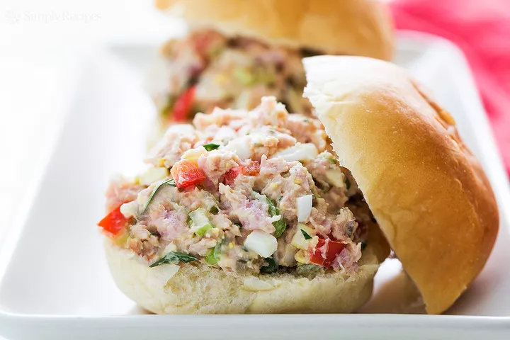
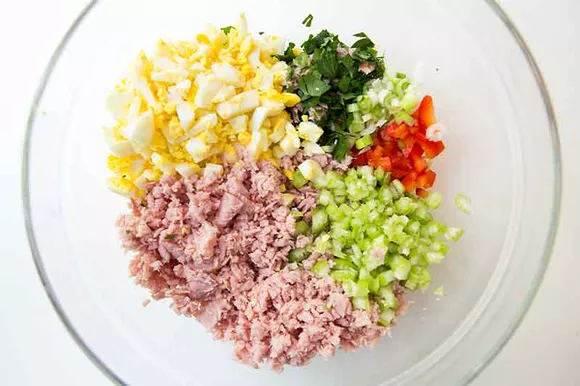

Ham Salad
Return to Home
Jump to Ingredients
Jump to Method

One of the best reasons to serve a ham for a holiday dinner or family gathering is the prospect of leftover ham, don't you think? Ham keeps well and can be used for a hearty ham and bean soup, a pasta dish with peas, or for a crowd-pleasing ham salad. It's one of those feed-a-lot-of-people comfort food salads that makes you look forward to leftovers.
Ingredients
- 2 cups finely diced or ground ham (about 3/4 pound)
- 3 large hard-boiled eggs, chopped
- 1/4 cup sweet pickle relish
- 1/4 cup mayonnaise
- 2 tablespoons minced green onion
- 2 tablespoons minced celery
- 2 tablespoons minced red bell pepper
- 1 tablespoon chopped fresh parsley
- 2 teaspoons Dijon mustard
- 1 tablespoon lemon juice
- Large pinch cayenne, optional
- Salt and black pepper, to taste
Method
- Mix the ham salad - Mix everything but the salt, pepper and cayenne in a large bowl. Taste and add cayenne, salt and black pepper to taste. Chill.

- Serve - Serve straight, or mixed in with macaroni, or in a sandwich in a hamburger bun, slider roll, kaiser roll, regular bread, in a pita, or as a wrap. Good with lemonade on a hot day.
Return to Top
Return to Home